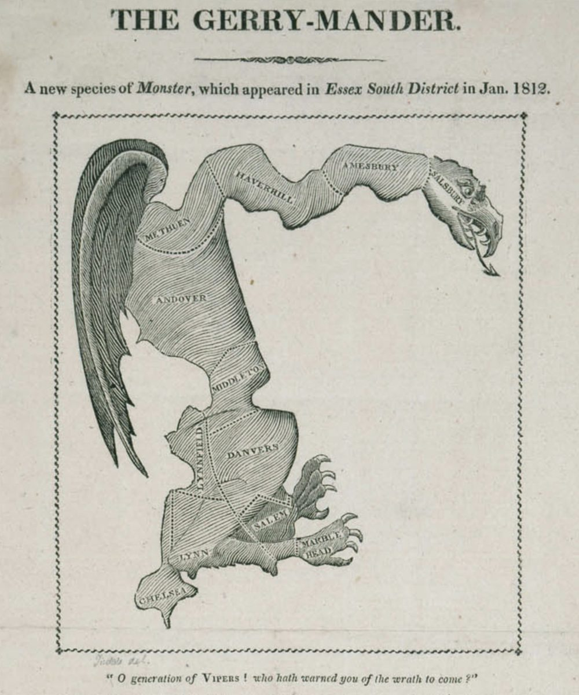

Lesson 7: The midterms of 3 November 2026: what is at stake?
Recap check
- How many members does the House have?
- How long is a senator's term?
- Which part of the Senate is elected every two years?
Answer key
- 435 voting members.
- Six years.
- One third.
What we need to say
Today you need to say what can really happen on 3 November, and imagine different rules.
Words to say it
| Word | Meaning | Example |
|---|---|---|
| the midterms | the elections in the middle of a president's term | The midterms are on 3 November 2026. |
| a seat | a place in a chamber | Democrats have 214 seats. |
| a majority | more than half of the seats | 218 seats make a majority in the House. |
| a governor | the head of a state | Thirty-six states elect a governor. |
Use the words
Word partners. Match the verbs with the nouns to make phrases from the lesson: win, hold, elect, redraw, break.
- ______ a majority
- ______ a special election
- ______ a governor
- ______ a district map
- ______ a tie
Answer key
- win a majority
- hold a special election
- elect a governor
- redraw a district map
- break a tie
More word practice
Word partners (ten)
To talk about what is at stake, match the verb with the right noun.
- win
- hold
- elect
- redraw
- break
- cast
- a. a majority
- b. a governor
- c. a ballot
- d. a tie
- e. a special election
- f. a district map
Answer key
- a (a majority)
- e (a special election)
- b (a governor)
- f (a district map)
- d (a tie)
- c (a ballot)
Definitions (ten)
Write the word: midterms, seat, governor, special election, ballot measure, turnout, gerrymandering, majority, incumbent, to concede.
- the elections in the middle of a president's term
- a place in a chamber
- the head of a state
- an election to replace someone who left
- a local question put directly to the voters
- the share of citizens who vote
Answer key
- the midterms
- a seat
- a governor
- a special election
- a ballot measure
- turnout
Read, one sentence per line
- Midterm elections take place halfway through a president's four-year term.
- On Tuesday 3 November 2026, Americans elect all 435 members of the House and 35 senators: 33 in regular elections, plus two special elections in Florida and Ohio to replace Marco Rubio, now Secretary of State, and JD Vance, now Vice President.
- Thirty-six states also elect a governor, and voters decide on ballot measures, local questions put to the voters.
- Before the vote, the Republicans control both chambers: in the House, 218 Republicans, 214 Democrats, one independent and two empty seats (official list of the Clerk, 1 October 2026); in the Senate, 53 Republicans and 47 Democrats and independents who vote with them.
- A party needs 218 seats for a majority in the House and 51 in the Senate; with 50 seats each, the Vice President breaks the tie.
- The new Congress meets on 3 January 2027.
Source: USAGov, Midterm elections
Look at the diagram
Seat bars: before the vote
House (435 seats, majority: 218)
Plus one independent and two empty seats. Source: Clerk of the House, official list, 1 October 2026.
Senate (100 seats, majority: 51)
On the ballot on 3 November 2026
| What? | How many? | Why it matters |
|---|---|---|
| House of Representatives | all 435 seats | the majority votes the laws and the budget, and can investigate the government |
| Senate | 35 seats: 33 regular, 2 special (Florida, Ohio) | the majority confirms judges and ministers |
| Governors | 36 states | they lead their state |
| Ballot measures | questions put directly to voters in many states | local laws on taxes, voting rules, health |
Look at the drawing

Picture labelling: The Gerry-Mander (1812)
Look at the broadside. Find:
- the title
- the date
- the head and the beak
- the wings
Answer key
- at the top: The Gerry-Mander
- in the subtitle: January 1812
- at the top right
- on the left
Tasks
- Read the seat bars: how many seats do the Democrats need to reach 218 in the House? And 51 in the Senate?
- List three things that voters choose on 3 November 2026.
- Say it: with the seat bars, say what will happen if each party wins (first conditional), then imagine one different rule (second conditional).
Grammar on the board
To say what can really happen, we need the first conditional; to imagine other rules, we need the second conditional: If the Democrats win 218 seats, they will control the House. If there were no midterms, the House would stay the same for four years.
Listen to your teacher, then copy the board.
Real or imaginary? Both conditionals; present perfect and past simple
- Rule
- Real: If + present, will. Imaginary: If + past, would.
- Form
- If the Democrats win 218 seats, they will control the House.
If there were no midterms, the House would stay the same for four years. - Examples
- If the Senate is split 50 to 50, the Vice President will break the tie.
- If every state used the same map rules, gerrymandering would be harder.
- Watch out
- If the Democrats would win → If the Democrats win.
- The results have been announced on 3 November. → The results were announced on 3 November (finished date).
- French and English
- French depuis → for + duration (for two years) or since + starting point (since 2024), with the present perfect: Republicans have controlled the House since 2023.
Quick check
- Real or imaginary? If a party wins 51 seats, it will have a majority.
- If there ______ (be) no Senate, the House ______ (make) the laws alone.
- The results ______ just ______ (announce).
Answer key
- real
- were, would make
- have, been announced
Practise
Stage 1. Recognise
Real (R, first conditional) or imaginary (I, second conditional)?
- If the Republicans keep 218 seats, they will control the House.
- If all Americans voted, turnout would be one hundred per cent.
- If a party wins 51 seats in the Senate, it will have a majority.
- If there were no midterms, the House would stay the same for four years.
- If the Democrats win the House, they will open investigations.
Answer key
- R
- I
- R
- I
- R
Stage 2. Transform
Put the verbs in the right form. Decide: real or imaginary?
- If the Democrats ______ (win) the House, they ______ (open) investigations.
- If the Senate ______ (be) split 50 to 50, the Vice President ______ (break) the tie.
- If senators ______ (be) elected for two years, they ______ (campaign) all the time.
- If turnout ______ (be) high, the result ______ (be) clearer.
- If there ______ (be) no Senate, the House ______ (make) the laws alone.
Answer key
- win, will open
- is, will break
- were, would campaign
- is, will be
- were, would make
Stage 3. Guided production
Answer with the right conditional. Look at the seat bars.
- What will happen if the Democrats win 218 House seats?
- What will happen if the Republicans keep 51 Senate seats?
- What will happen if the Senate is split 50 to 50?
- What will happen if the opposition wins the House?
- What would happen if there were no midterms?
Answer key
- If they win 218 seats, they will control the House.
- If they keep 51 seats, they will keep the majority.
- The Vice President will break the tie.
- It will be able to block bills and open investigations.
- The House would stay the same for four years.
A. Real or imaginary?
Write R (real possibility) or I (imaginary).
- If the Republicans keep 218 seats, they will control the House.
- If all Americans voted, turnout would be one hundred per cent.
- If a party wins 51 seats in the Senate, it will have a majority.
Answer key
- R
- I
- R
B. First or second conditional?
Put the verbs in the right form.
- If the Democrats ______ (win) the House, they ______ (open) investigations.
- If the Senate ______ (be) split 50 to 50, the Vice President ______ (break) the tie.
- If senators ______ (be) elected for two years, they ______ (campaign) all the time.
Answer key
- win, will open
- is, will break
- were, would campaign
Figure of speech
Figures of speech: the blend word and political metaphors
Gerrymander is a blend word: Governor Gerry + salamander, because a district looked like a salamander and Elkanah Tisdale added a head, wings and claws. Commentators also use metaphors: the midterms are a referendum on the president; a close race is a toss-up (like a coin); a president who has lost power is a lame duck.
- Which two words make gerrymander?
- Why did the artist draw a monster?
- Why are the midterms called a referendum on the president?
Answer key
- Gerry and salamander.
- To show that the district was unnatural and dangerous for democracy.
- Many voters use them to judge the president's first two years.
Say it
Oral task: a one-minute podcast, what is at stake?
Steps
- Introduce the podcast.
- Give three numbers.
- Say what can change.
- Ask listeners to follow the results.
- Welcome to ...
- Today, ...
- The key numbers are ...
- If ..., ...
- Stay tuned for the results.
Model answer
Welcome to Election Talk. Today, Americans vote in the midterms. The key numbers are 435, 35 and 36. If the opposition wins the House, the president will find it harder to pass laws. Stay tuned for the results.
Find the results
After the vote, you find the results yourself in lesson 9.
Gap-fill worksheet
- The take place in the middle of the president's term.
- All House seats are elected.
- Senate seats are elected in 2026.
- Thirty-six states elect a .
- 218 seats make a in the House.
- The person who already has the job is the .
- Drawing districts to help one party is .
- A local question put to voters is a .
- After a defeat, a candidate may .
- A very close race is a .
Answer key
- midterms
- 435
- 35
- governor
- majority
- incumbent
- gerrymandering
- ballot measure
- concede
- toss-up
Going further (optional)
Past simple with a finished time: The House was won on 3 November. Present perfect with a link to now: The results have just been announced. Reporting passive: The Senate is expected to remain close. It is thought that turnout will be high.
Translate into English
- Si les démocrates gagnent 218 sièges, ils contrôleront la Chambre.
- Les résultats n'ont pas encore été annoncés.
Answer key
- If the Democrats win 218 seats, they will control the House.
- The results have not been announced yet.